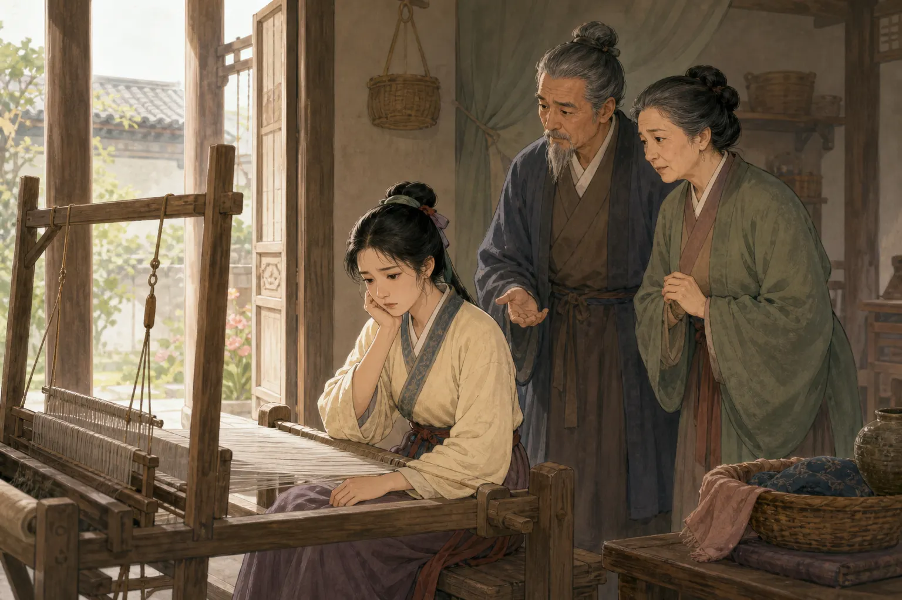
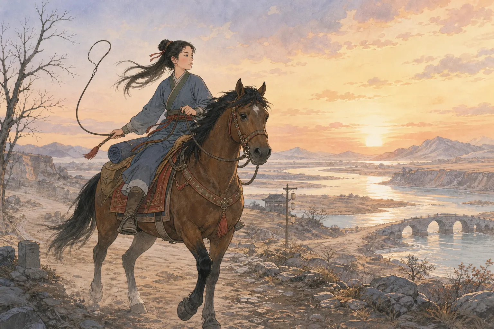
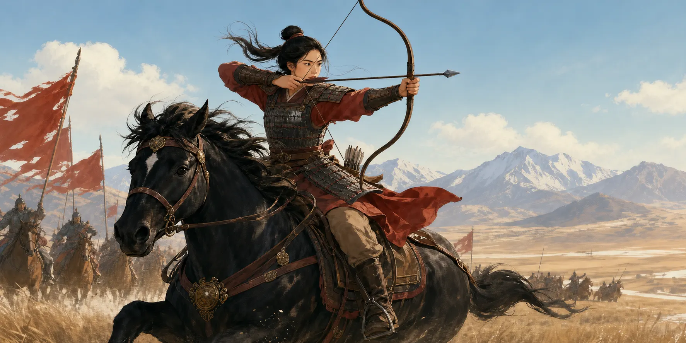
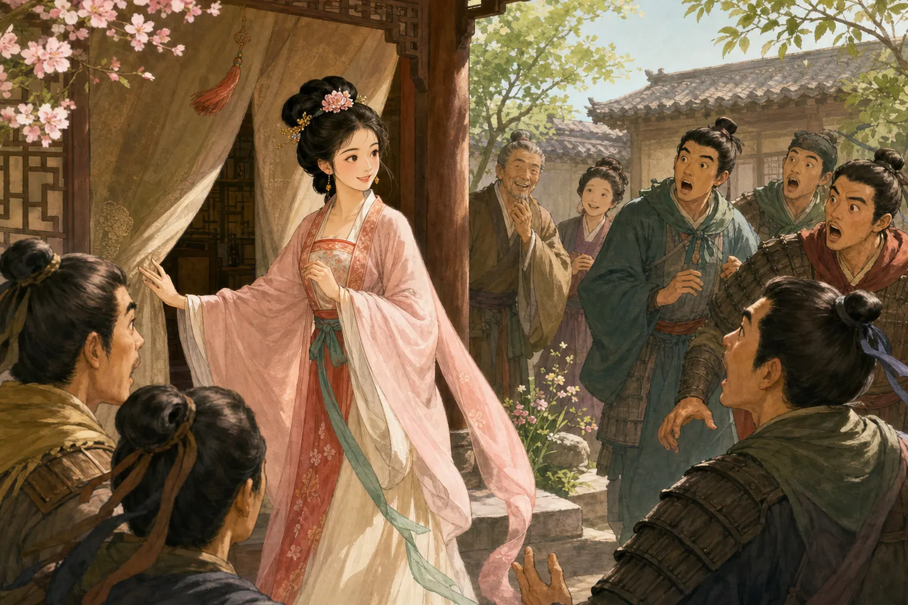

木兰的勇敢旅程
Mulan's Brave Journey
Page 1
名单上有父亲的名字
A Call from the Army

Mulan sees the notice calling her father to join the army. This is a modern story picture, not a photograph from history.
很久以前，有一位年轻女子叫木兰。她和家人住在一起。每天，木兰会做许多事情，也会坐在门边织布。
有一天，一张征兵的名单送来了。国家需要士兵，每个被选中的家庭都要有人去。木兰在名单上看见了父亲的名字。
家里没有成年的儿子，也没有哥哥可以去。于是，木兰作出了一个勇敢的决定：她要代替父亲加入军队。
Long ago, Mulan lived with her family. She spent her days helping at home and weaving cloth by the door.
Then one day, a notice came from the A large group of soldiers who serve and fight together.. Mulan's father had been called to go. Mulan had no older brother, and her little brother was still too young.
Mulan knew what she would do. She would go in her father's place.
Page 2
木兰准备出发
Mulan Gets Ready to Go

Mulan gets her horse and gear ready, then leaves her family. The old poem does not tell us what they said.
木兰开始为远行作准备。她买马、马鞍、缰绳和长鞭。每准备好一样东西，离出发的时间就更近了一点。
天亮了。木兰穿好出征的衣服，骑上马。她告别父母，离开了熟悉的家。
木兰不知道自己要离开多久。她只知道前面的路很远，也很危险。可是她没有回头。
Mulan bought a horse and everything she needed for the ride. Soon, she was ready.
At sunrise, Mulan said goodbye to her family. She climbed onto her horse and rode away.
She did not know when she would see home again. The road ahead was long and dangerous. But Mulan kept going.
Page 3
离家越来越远
Farther and Farther from Home
木兰骑了一整天。到了晚上，她在黄河边休息。她听不见父母的声音，只听见河水不停地流。
第二天，木兰又骑上马。她越过山岭，一直向北走。到了夜里，远处传来了战马的声音。
家已经很远了。前面是陌生的道路、寒冷的风和军队的生活。木兰想念家人，却还是跟着大家继续向前。
Mulan rode all day. By nightfall, she had reached the A great river in northern China and one of the longest rivers in the world.. The water rushed past her. Her parents' voices were far away.
The next morning, she rode on. She crossed hills and traveled north. That night, she heard horses neighing in the distance.
Home was far behind her now. Cold winds and strange roads lay ahead. Mulan missed her family, but she kept moving with the army.
Page 4
军队里的许多年
Many Years in the Army

Mulan spends cold nights with the other soldiers. The old poem does not tell us what happened in every battle.
木兰跟着军队走过很远的路。白天，士兵们继续赶路。夜里，他们穿着冰冷的盔甲，听着打更的声音。
战争持续了很多年。木兰和其他士兵一起工作，一起面对危险，也一起在寒冷的夜里守望。大家渐渐把她当成一个可以信任的伙伴。
古诗没有告诉我们木兰打过哪一场仗，也没有说她做过哪一件特别的战功。它只告诉我们，许多年过去以后，木兰终于可以回去了。
Mulan marched with the soldiers for years. Some days were long. Some nights were bitter cold.
She rode beside the other soldiers. She stood guard with them. She faced the same dangers they did. They learned that they could count on her.
The old poem skips over most of the battles. It does not tell us exactly what Mulan did. We only know that she served bravely - and that, after many years, the war came to an end.
Page 5
木兰只想要一件事
All Mulan Wanted Was Home
战争结束了。木兰和回来的士兵去见国家的统治者。他听说木兰立了功，想给她一个重要的官职。
可是木兰不想留在那里做官。她已经离开家太久了。她只想要一匹跑得快的马，带她回到家人身边。
木兰骑上马，再次走上长长的路。这一次，她不是离家越来越远。每走一步，她都离家更近。
At last, the war ended. The emperor thanked Mulan and offered her an important job.
But Mulan did not want to stay. She had been away for so long. All she wanted was a fast horse to carry her home.
Mulan climbed onto the horse and began another long ride. This time, every step brought her closer to her family.
Page 6
一个让伙伴吃惊的秘密
A Big Surprise

Mulan is finally home. Her family comes to meet her, and her army friends arrive at the door.
木兰快到家时，父母走出城外迎接她。姐姐准备好衣裳，弟弟忙着准备饭菜。一家人等了许多年，终于又见到了木兰。
木兰回到自己的房间。她脱下出征时穿的衣服，换回从前的衣裳，又在窗边梳好头发。然后，她走出去见军中的伙伴。
伙伴们全都惊呆了。他们和木兰一起生活了那么多年，却一直不知道她是一位女子。现在，他们眼前的木兰还是那个勇敢、可靠的伙伴，只是他们终于知道了她的秘密。
Mulan's parents came out to welcome her. Her sister dressed for the celebration, and her little brother helped prepare a big welcome meal. At last, the family was together again.
Mulan went to her old room. She changed out of her army clothes, put on her old clothes, and fixed her hair by the window. Then she stepped outside.
Her friends from the army stared in surprise. For years, they had thought Mulan was a man. Now they knew her secret. Yet she was still the same brave friend they had always known.
木兰的故事还在向前走
The Story Goes On
古诗最后讲到两只一起奔跑的兔子。一只是雄兔，一只是雌兔。可是当它们跑得飞快时，你能一眼分清吗？
木兰的伙伴也曾经只看到身边有一位好士兵。他们没有想到，这位士兵是一位女子。木兰用自己的行动告诉他们，勇气和能力不是只属于一种人。
我们不知道木兰是不是历史上一个真实的人。但一千多年来，人们一直在讲她的故事。她离开家，勇敢地走过很远的路，最后又选择回家。直到今天，新的读者还在和她一起出发。
The old poem ends with two rabbits racing side by side. One is male, and one is female. While they are running, can you tell which is which?
Mulan's friends could not tell that she was a woman while they marched beside her. What they saw was a brave soldier they could count on.
No one knows whether Mulan was a real person. But people have told her story for more than a thousand years. Each time they tell it, Mulan climbs onto her horse, rides away, and finds her way home again.
木兰：替父出征的女儿
Mulan: The Daughter Who Rode to War
Page 1
织布机为什么停了？
Why Did the Loom Fall Silent?
This modern illustration imagines Mulan beside her loom. The old poem never tells us exactly when or where she lived.
“唧唧复唧唧，木兰当户织。”一首流传了一千多年的古诗，是这样把木兰带到我们面前的。门边的织布机本来应该一下又一下地响着，可是这一天，人们只听见木兰在叹气。
她不是在想念谁。昨夜，她看见了征兵的军帖。军帖一卷又一卷，每一卷上都有父亲的名字。家里没有成年的儿子，木兰也没有哥哥可以替父亲出征。
古诗没有告诉我们木兰想了多久，也没有写下她和家人说过什么。它只告诉我们，她作出了决定：她要买马和出门需要的东西，代替父亲加入军队。织布机安静下来，木兰的旅程开始了。
For more than a thousand years, Mulan has entered her story to the sound of a A machine used to weave thread into cloth.: click-clack, click-clack. Then the weaving stops. Instead of the loom, we hear Mulan sigh.
The night before, Mulan saw a notice from the A large group of soldiers who serve and fight together.. Her father's name was on it - not once, but again and again. Someone from the family had to go, but Mulan had no older brother, and her little brother was still too young.
The poem never tells us how long Mulan thought or what she said to her family. It simply shows us her decision. She will get a horse, prepare for the journey, and go in her father's place. The loom is quiet now. Mulan's journey has begun.
Page 2
四个市场，一次出发
Four Markets and One Departure
Mulan gets her horse and riding gear ready. This modern illustration imagines the busy departure described in the poem.
第二天，木兰开始为远行做准备。她去东边的市场买马，去西边的市场买马鞍和垫子，又到南边买缰绳，到北边买长鞭。古诗把四个市场一个接一个排开，读起来就像木兰的脚步越来越快。
一匹马、一副马鞍、一条缰绳和一根长鞭，并不能让人立刻变成勇敢的战士。可是这些东西让一个重大的决定变成了可以动手完成的小事：先备好马，再收好行装，然后踏上路。
天刚亮，木兰告别父母，骑马离开家。到了晚上，她已经来到黄河边。家里的织布声听不见了，熟悉的声音也离她越来越远。前面还有多长的路，没有人知道。
The next day, Mulan visits four markets. In the east, she buys a horse. In the west, she finds a saddle and saddle blanket. She buys a bridle in the south and a long riding whip in the north. The poem moves quickly from market to market, as if Mulan's own footsteps are speeding up.
None of these things can make a person brave. But they turn one enormous choice into smaller tasks: find the horse, pack the gear, and get ready to ride.
At dawn, Mulan says goodbye to her parents and leaves home. By nightfall, she has reached the A great river in northern China and one of the longest rivers in the world.. The loom and all the familiar sounds of home are far behind her. She does not know how long the road ahead will be.
Page 3
河水盖住了家人的声音
The River Drowned Out the Sounds of Home
夜里，木兰住在黄河边。她听不见父母呼唤她，只听见河水哗啦哗啦地流。第二天清晨，她离开黄河继续赶路；到了晚上，远方传来的已经是北方骑兵和战马的声音。
古诗没有画出一张清楚的地图，让我们沿着木兰的每一步寻找今天的城市。它留下的是声音：先是家里的织布机，然后是黄河，再后来是战马。声音一层层改变，我们也知道木兰已经离家很远。
她跨过山岭，向寒冷的北方前进。父母没有跟在身边，回家的路也越来越长。可是军队仍在往前走，木兰也和大家一起往前走。
Mulan spends the night beside the Yellow River. She cannot hear her parents calling. All she hears is the rush of water. The next morning, she rides on. By the following night, another sound reaches her through the dark: horses neighing far to the north.
The poem does not give us a map that we can trace through modern cities. It gives us sounds instead. First we hear the loom at home. Then the river takes its place. Finally, we hear distant warhorses. Each sound tells us that Mulan is farther from everything she knows.
She crosses mountain passes and rides into the cold north. Home lies farther and farther behind her. Still, the army moves forward, and Mulan moves with it.
Page 4
很多年的战争，古诗只写了几行
Years of War Pass in Only a Few Lines
This modern illustration imagines a cold army camp. The poem shows marching, night watches, armor, and death, but it never names one of Mulan's battles.
接下来，古诗忽然跑得像一匹快马。木兰走过万里路，飞快地越过关口和山岭。北方的寒风里，夜巡的打更声一阵阵传来；冰冷的月光落在士兵的铁甲上。
诗没有告诉我们木兰怎样训练，也没有写她用什么办法赢得某一场战斗。它让漫长的战争从几行诗里闪过去，却没有假装战争很轻松。有人经历一次又一次战斗后再也没有回来，也有人在许多年后终于踏上归途。
木兰和伙伴们一起行军，一起在寒夜里守望，也一起活过了那些危险的年月。他们只知道身边有一个可靠的同伴，并不知道木兰回家以后会带给他们怎样的惊讶。
Now the poem begins to gallop. Mulan travels thousands of miles and flies across mountain passes. Watchmen strike wooden clappers in the northern cold. Moonlight gleams on iron armor.
Years of war pass in just a few lines. The poem never shows Mulan training or winning a particular battle, but it does not make war seem easy. Some soldiers fight again and again and never return. Others finally begin the long journey home.
Mulan marches with the other soldiers, stands guard through bitter nights, and survives the same dangers they do. To them, she is a trusted friend. None of them knows what they will discover when they reach her home.
Page 5
她不要官职，只想回家
She Wanted Only to Go Home
战争结束以后，活下来的士兵回到朝廷接受奖赏。统治者把木兰的名字记在功劳簿上，还问她愿不愿意留下来做官。这本来是许多人盼望已久的机会，可木兰没有接受。
她没有要新的头衔，也没有要求一座华丽的房子。她只想要一匹跑得很快的坐骑，把自己送回故乡。她已经走过那么远的路，现在最想去的地方，正是旅程开始的地方。
古诗没有告诉我们木兰立下了哪一种战功。它把最亮的一刻留给了她自己的选择：别人准备给她荣华，她却清清楚楚地说出了自己真正想要的东西。木兰要回家。
When the war ends, the soldiers return to receive their rewards. Mulan has earned great honors. At the royal court, the A title used by rulers in parts of Central and East Asia. offers her an important government job. Many people would be thrilled. Mulan says no.
She does not ask for a grand title or a beautiful house. She asks for a fast horse to carry her home. After traveling so far, the place she wants most is the place where her journey began.
The poem never tells us exactly what Mulan did to earn her reward. Instead, it gives the brightest moment to a choice she makes for herself. Other people offer her power and riches. Mulan knows what she wants: she wants to go home.
Page 6
门一打开，伙伴们都愣住了
The Door Opens - and Her Friends Stare
Mulan's family welcomes her home. The poem says that she changes clothes, fixes her hair, and puts on a yellow face decoration, but it does not describe her exact outfit.
木兰快到家时，父母互相扶着走出城外迎接她。姐姐听到消息，赶紧整理自己的衣裳；弟弟忙着准备丰盛的饭菜。很久没有团聚的一家人，终于又要坐在一起了。
木兰回到自己的房间，打开东边的门，又坐到西边的床上。她脱下出征时穿的衣服，换回从前的衣裳，在窗边梳好头发，又对着镜子贴上花黄。做完这一切，她推门走到伙伴们面前。
伙伴们全都愣住了。他们和木兰一起走过那么远的路，一起生活了那么多年，却从来不知道她是一位女子。木兰没有发表一篇长长的演说。她只是站在那里，让所有人重新想一想：他们以为自己早已了解的伙伴，究竟是谁？
As Mulan nears home, her parents walk outside the town to meet her. Her older sister dresses for the celebration, and her little brother helps prepare a welcome meal. After so many years apart, the family is together again.
Mulan returns to her old room. She opens one door, crosses the room, and sits on her old bed. She takes off her army clothes and puts on the clothes she wore before she left. By the window, she fixes her hair. In the mirror, she adds a yellow decoration to her face. Then she steps outside.
Her army friends stare. They have traveled and lived beside Mulan for years, yet they never knew she was a woman. Mulan does not make a speech. She simply stands before them, still the brave and trusted friend they have always known.
两只兔子一起向前跑
Two Rabbits Run Side by Side
《木兰诗》的结尾没有继续解释木兰，也没有告诉读者应该怎样评价她。它忽然放出两只兔子：一只雄兔，一只雌兔。它们并排贴着地面飞快奔跑时，你还能一眼分清哪一只是哪一只吗？
这就是古诗留给我们的最后一个画面。多年来，木兰和伙伴一起赶路、一起受冷、一起面对危险。真正让她成为好士兵的，不是别人最先看见的样子，而是她做出的选择、承担的工作，以及一路坚持到底的勇气。
我们不知道历史上是否真有一位能查到姓名和战役的木兰。但这首古诗确实流传了很久。织布机停下的那一刻、黄河边的水声、盔甲上的寒光和伙伴惊讶的脸，也一直跟着木兰奔跑到了今天。
The poem does not end by explaining Mulan or telling us what to think. Instead, two rabbits race into the final lines. One is male and one is female. When they run side by side, can anyone tell which is which?
That is the last picture the poem leaves with us. For years, Mulan traveled, worked, shivered, and faced danger beside the other soldiers. What made her a good soldier was not the first thing someone noticed about her. It was what she did and the courage she showed.
We do not know whether Mulan was one real person whose full name and battles can be found in history. We do know that her poem has lasted for more than a thousand years. The silent loom, the river in the dark, moonlight on cold armor, and the surprised faces at her door have carried Mulan's story all the way to us.
木兰：一首诗怎样长成一千年的传奇？
Mulan: How a Poem Became a Thousand-Year Legend
Page 1
先听织布机，再寻找真正的木兰
Listen to the Loom - Then Look for the Real Mulan
This is a modern story illustration, not a record of a historical event. The surviving poem gives Mulan no surname, hometown, or exact date.
“唧唧复唧唧，木兰当户织。”《木兰诗》没有先让英雄挥刀，而是让我们听见织布机一下又一下地响着，然后忽然停了。木兰昨夜看见军帖，征兵名单上有父亲的名字；家里没有成年的儿子，也没有哥哥能代替他。于是，她开始买马和装备，准备替父出征。今天的故事常说父亲年老多病，可现存的诗只说家里没有成年儿子，并没有告诉我们父亲的年龄或身体状况。
故事已经出发，寻找“真正的木兰”却没有这么快。许多研究者认为这首叙事诗来自中国北方，里面可能留下了北朝生活的影子，但谁最先写下它、它最早在哪一年出现，我们都无法确定。六世纪的一部音乐书据说收录过《木兰》，可那部书已经失传。今天能完整读到的版本，保存在大约五百年后编成的《乐府诗集》中。
这像一首歌在许多人之间传唱了很久，最后才被一个较晚的记录者保存下来。它能告诉我们，木兰的故事很早就在流传；它却不能交给我们一张写着出生地、服役日期和真实战役的身份证明。接下来读木兰，既要跟着故事往前走，也要留意诗真正留下了哪些线索。
“Click-clack, click-clack - Mulan weaves beside the doorway.” The Ballad of Mulan does not introduce its hero with a sword in her hand. It begins with the sound of a A machine used to weave thread into cloth. - and then with silence. Mulan has found her father's name on an army notice. There is no grown son in the family who can go in his place, so she begins buying a horse and riding gear. Many later versions make her father old and ill. The surviving poem says neither.
The story is already moving, but the search for a “real Mulan” is much harder. Many scholars connect the poem to northern China and believe that it may preserve memories of life during the A time about 1,500 years ago when several dynasties ruled northern China.. We do not know who first composed it or when its earliest form appeared. A music book from the sixth century reportedly contained a song about Mulan, but that book is lost. The complete poem we can read today was preserved in the Collection of Music Bureau Poems, an anthology compiled about five hundred years later.
Imagine a song passing from singer to singer for generations before someone finally writes down the version that survives. It can show us that people were telling a Mulan story long ago. It cannot give us one soldier's birth certificate, service record, and list of battles. We can follow the adventure while also asking a historian's question: what does the poem actually tell us?
Page 2
为什么大家都叫她“花木兰”？
Why Does Everyone Call Her “Hua Mulan”?
This modern illustration does not show an identified historical person. The poem names the Yellow River, Black Mountain, and Yan Mountain, but those clues do not give us a certain route.
从诗的第一行读到最后一行，女主人公一直只叫“木兰”。诗没有给她“花”这个姓，也没有说她出生在哪一座村庄。可是故事流传得越久，答案反而越多：有的庙碑、戏曲和小说说她姓花，有的说她姓朱，还有的说她姓魏；好几个地方也都留下了“木兰来自这里”的传说。
这些版本不是毫无价值。它们能让我们看见不同时代、不同地方的人怎样喜爱木兰，又怎样把她带进自己的家乡记忆。可是几个互相冲突的答案，不能一起拼成同一个人的传记。所以，“花木兰”是今天最熟悉的名字，却不是原诗交给我们的完整姓名。
诗里的世界也比电影中一张边界清楚的“古代中国”地图复杂。同一位统治者既被叫作“可汗”，也被叫作“天子”；木兰骑马经过黄河，又听见北方骑兵的声音。许多研究者因此想到北魏 - 一个由鲜卑拓跋建立的王朝，也想到当时北方不同语言和生活方式彼此交会的社会。不过，歌曲在传唱中会改变，地名和称号也可能在抄写时留下新的层次。它们给了我们方向，却不能把木兰钉在一个确定的族群或一场确定的战争里。
From the first line of the ballad to the last, its heroine is simply “Mulan.” The poem never calls her Hua or names her village. As the story spread, however, later versions supplied more answers. Temple inscriptions, plays, novels, and local traditions gave her the surnames Hua, Zhu, or Wei. Several places claimed that Mulan came from there.
These traditions still matter. They show how people in different centuries welcomed Mulan into their own communities. But several conflicting hometowns and surnames cannot become one reliable biography. “Hua Mulan” is the name most people know today; it is not a full name handed down by the earliest ballad.
The poem's world is also more complicated than a movie map labeled “ancient China.” It uses two titles for the leader: A title used by rulers in parts of Central and East Asia. and An old title for the person who ruled an empire in China.. Mulan crosses the Yellow River and hears northern Soldiers who fight while riding horses.. These clues have led many scholars to the A northern Chinese dynasty about 1,500 years ago., when the Tuoba branch of the A group of peoples who lived across the northern grasslands and northern China. ruled much of northern China and different languages and ways of life met. But songs change as they travel. Place-names and titles may also collect new layers when texts are copied. The clues point north; they do not tie Mulan to one proven people or one known war.
Page 3
十年战争，为什么只写了几行？
Why Does a Long War Take Only a Few Lines?
This is a modern imagined camp, not a historical reconstruction. The poem never says how Mulan trained, became a general, or won a battle on her own.
木兰买好马具，早晨辞别父母，夜晚已经听见黄河流水；再走一天，远方传来的又变成北方骑兵的声音。接着，诗像一匹突然加速的马，只用几句就冲过了整场战争：“万里赴戎机，关山度若飞。朔气传金柝，寒光照铁衣。将军百战死，壮士十年归。”寒夜、打更声、铁甲和死亡都在眼前闪过，可是诗没有留下任何一场战役的名字，也没有记录木兰在军营里说过什么。
这片巨大的空白，让后来的讲故事者有了发挥的地方。他们为木兰加上训练、比武、朋友、升职和惊险的作战计划。这些情节可以让一部戏或电影非常精彩，却不能反过来当成原诗里的历史资料。
数字也留下了一个小谜题。诗先说壮士“十年归”，后来又说伙伴和木兰“同行十二年”。这不一定是一份算错了日期的服役记录；古诗里的“十”和“十二”，也可能只是告诉听众：时间真的过去了很久。面对没有写下来的年月，最诚实的办法不是替木兰编满每一天，而是看看诗把光照在了哪里 - 她的决定、她的离家，还有她终于回来的那一刻。
Mulan gathers her gear, leaves her parents at dawn, and reaches the Yellow River by night. One day later, she hears northern horses in the distance. Then the poem suddenly gallops across the entire war. Mulan flies over mountain passes. Watchmen's clappers sound in the freezing air. Moonlight shines on iron armor. Generals die, and surviving soldiers come home. We see cold, metal, speed, and death - but not one named battle or a single conversation in camp.
That enormous blank gave later storytellers plenty of room. They invented training scenes, contests, close friends, promotions, and daring plans. Such episodes may make an exciting play or movie. They do not become evidence about the early poem simply because audiences remember them.
Even the poem's numbers raise a question. One line sends warriors home after ten years; another says Mulan's companions traveled with her for twelve. This does not have to be a military record with an arithmetic error. In an old poem, both numbers may simply tell listeners, “A very long time passed.” Filling every missing year with invented adventures would give us a busier story, not better history. The poem chooses to focus on Mulan's decision, her departure, and her return.
Page 4
木兰立了什么功？这是诗留下的空白
What Did Mulan Do? The Poem Does Not Say
战争结束后，木兰去见统治者。诗说她的功劳被记了很多次，还得到了丰厚赏赐。可汗问她想要什么，她却不要“尚书郎”这样的官职，只请求一匹快马或一头快骆驼，把自己送回故乡。
可是，木兰究竟做了什么才得到这么高的奖赏？她指挥过军队、送过情报，还是在许多次战斗中表现出色？诗一个答案也没有留下。因此，说她“成为中国第一位女将军”，或者凭一场神奇战斗独自拯救全国，都超过了现有文字能支持的范围。
这个空白没有让木兰变得无趣，反而把另一个问题照亮了。她已经证明自己能完成士兵的工作，为什么最想要的却是回家？也许诗珍惜亲情，也许它对官场没有兴趣，也许听众就是喜欢一场最后回到起点的旅程。我们无法询问那位没有留下姓名的作者，却能看到这个选择带来的力量：木兰不需要一个新头衔来证明自己。她完成了危险的工作，然后自己决定下一步往哪里走。
When the war ends, Mulan appears before the khan. The poem says that her achievements have been recorded many times and that she receives rich rewards. When he asks what she wants, Mulan turns down a government post. She asks only for a fast horse - or, in some readings, a swift camel - to carry her home.
What did she do to earn such an honor? Did she lead troops, carry messages, or fight especially well? The poem never answers. Calling Mulan “China's first woman general” or saying that she saved the whole country in one spectacular battle goes beyond the surviving words.
The missing answer does not make Mulan less interesting. It draws our attention to a different question. After proving that she can do a soldier's work, why does she choose home instead of power? Perhaps the poem cares most about family. Perhaps government service is simply not the point of this story. Perhaps early audiences loved a journey that returned to its beginning. We cannot ask the unknown poet. We can see, however, that Mulan does not need a new title to prove her worth. She completes the dangerous work, and then she chooses what comes next.
Page 5
同行多年，伙伴为什么没有认出她？
After Years Together, Why Didn't Her Comrades Know?
This modern illustration imagines Mulan's homecoming. The poem mentions her old clothes, her hair, and a yellow face decoration, but it does not describe the exact outfit.
木兰快到家时，父母互相扶着出城迎接，姐姐整理衣裳，弟弟忙着准备饭菜。木兰推开旧房门，脱下出征时的衣服，换回从前的衣裳，又对着镜子整理头发、贴上花黄。等她重新走到伙伴面前，大家全都愣住了：同行这么多年，他们竟然一直不知道木兰是一位女子。
电影很容易把这里变成一个随时可能被揭穿的秘密，让木兰每天都担心受到惩罚。可是原诗没有说明她怎样隐藏身份，也没有写“被发现就会处死”。那个危险来自一些后世改编，不应该悄悄混进早期诗歌。
诗最后没有停下来讲一番大道理，而是忽然放出两只兔子：“雄兔脚扑朔，雌兔眼迷离；双兔傍地走，安能辨我是雄雌？”两只兔子贴着地面一起奔跑时，你还能立刻分清吗？这不是一堂简单的生物课，而是一个机灵的比喻。人们以为衣服、工作和外表能马上告诉自己“这个人是谁”，可在并肩行动的年月里，木兰和伙伴首先是一起赶路、一起受冷、一起活下来的士兵。
As Mulan approaches home, her parents walk outside the town to meet her. Her sister gets dressed for the celebration, and her younger brother prepares food. Mulan enters her old room, takes off her army clothes, and puts on what she wore before she left. She fixes her hair and adds a yellow decoration to her face. When she steps outside again, her fellow soldiers stare. After years at her side, they never knew that Mulan was a woman.
A movie can easily turn those years into a daily fear of discovery and punishment. The poem never explains how Mulan kept her identity private, however, and it never says that she would be executed if anyone found out. That threat comes from later retellings. It should not be quietly inserted into the early poem.
Instead of ending with a lecture, the ballad sends out two running rabbits. It describes a male rabbit's feet and a female rabbit's eyes, then asks who can tell them apart as they race side by side. The comparison is playful, but its point is sharp. Clothes, jobs, and appearances do not always tell us as much as we think. For years, Mulan and the people beside her were first of all soldiers who marched, shivered, and survived together.
Page 6
一千多年里，木兰变过多少次？
How Many Times Has Mulan Changed?
诗里的木兰回家了，她的故事却没有停下来。几百年又几百年，讲故事的人不断为她增加新的名字、动作、朋友和结局。十六世纪，徐渭写了一出木兰戏。他让“花”成为她广为人知的姓，还写木兰先解开缠足，才能穿上军靴。
这个细节听起来生动，却藏着时间上的问题。木兰早期故事指向的北朝，比缠足成为普遍风俗早了许多世纪。因此，这双被解开的脚告诉我们的主要不是北朝木兰怎样生活，而是明代舞台怎样想象一位勇敢女性。后来的小说又给木兰安排了不同结局；二十世纪的戏剧和电影把她写成民族英雄；现代动画则加入会说话的伙伴和新的爱情线。
改编并不是偷偷把故事弄坏。每个时代都会把自己最关心的问题带进木兰的旅程，关键是要把不同层次标清楚。我们可以喜欢一条会说话的龙，也可以被一个后来增加的壮烈结局打动，只要不把它们倒推成北朝史实。把不同版本并排放在一起，甚至能帮助我们认识创作者生活的时代：他们希望女孩怎样表现勇敢？在他们心里，家庭、国家和个人选择，哪一个应该放在最前面？
The Mulan of the ballad comes home, but her story keeps traveling. Century after century, storytellers give her new names, adventures, friends, and endings. In the sixteenth century, the playwright Xu Wei helps make Hua her best-known surname. In his play, Mulan also unwraps her bound feet before pulling on a soldier's boots.
It is a memorable scene - and a clue that this is a later Mulan. The northern world suggested by the early ballad existed centuries before The old practice of tightly wrapping girls' feet to change their shape and keep them small. became widespread. The scene tells us more about how people in the A time in China from 1368 to 1644. imagined a brave woman than about a woman living in the Northern Dynasties. Later novels gave Mulan other endings. Twentieth-century plays and movies made her a national hero. Modern animated versions added talking companions and romance.
Changing a story does not automatically ruin it. Every age carries new questions into Mulan's journey. The important thing is to keep the layers straight. We can enjoy a talking dragon or feel moved by a tragic ending without treating either as a fact from the Northern Dynasties. Comparing versions can even reveal the worlds that created them. How was a girl expected to show courage? Which mattered most - family, country, or her own choice?
木兰是真的吗？先问“真实”是什么意思
Was Mulan Real? First Ask What “Real” Means
如果“真实”是指一个能在正史中查到生卒年、家乡和战役的人，目前没有足够证据证明木兰存在。如果“真实”也可以是一首古老诗歌、一千多年不断变化的讲述，以及无数读者从中得到的勇气，那么木兰当然真实地影响了世界。
我们不必在“每一个细节都是真事”和“既然无法证明，就全部没有意义”之间二选一。我们可以先听织布机停下，跟着诗跨过黄河，最后看两只兔子并肩奔跑；同时也记住，哪里是早期诗句，哪里是后来讲故事的人为木兰换上的新衣服。
木兰的力量，也许正来自这两件事同时成立：我们不知道她究竟是谁，可一代又一代的人仍在讲她的故事，并借着她追问同一个问题 - 一个人的能力，究竟应该由什么来决定？
If “real” means a person whose birth, hometown, and battles can be verified in historical records, we do not have enough evidence to prove that Mulan existed. But an ancient poem, more than a thousand years of retellings, and the courage readers have found in them are real too. Mulan has clearly changed the world, whether or not we can identify one soldier behind the story.
We do not have to choose between “every detail happened” and “nothing matters unless we can prove it.” We can hear the loom stop, follow the poem across the Yellow River, and watch two rabbits race side by side. At the same time, we can learn which details come from the early ballad and which were added later.
Perhaps Mulan's lasting power comes from holding both ideas at once. We do not know exactly who she was - or whether she was one person at all. Still, generation after generation has told her story and returned to the same question: what should determine what a person is capable of doing?